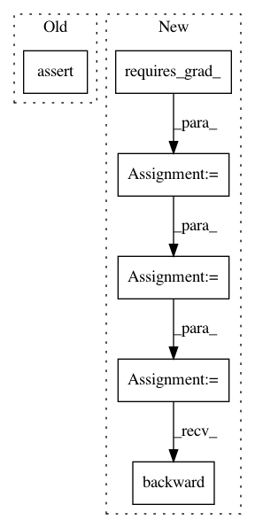

33e3deed4f0d2df250b4231748d4c5a392b84815,test/test_mkldnn.py,TestMkldnn,test_relu_,#TestMkldnn#,295
Before Change
def test_relu_(self):
x1 = torch.randn((4, 5), dtype=torch.float32) * 10
x2 = x1.clone().to_mkldnn()
self.assertEqual(torch.relu_(x1), torch.relu_(x2).to_dense())
@unittest.skipIf(IS_WINDOWS, "Limit support for bf16 path")
def _test_relu_bf16_base(self, name):
x = torch.randn((4, 5), dtype=torch.float32) * 10
After Change
def test_relu_(self):
x = torch.randn((4, 5), dtype=torch.float32) * 10
x1 = x.clone().requires_grad_()
x2 = x.clone().to_mkldnn().requires_grad_()
y1 = torch.relu_(x1.clone())
y2 = torch.relu_(x2.clone()).to_dense()
loss1 = y1.sum()
loss2 = y2.sum()
loss1.backward()
loss2.backward()
self.assertEqual(y1, y2)
self.assertEqual(x1.grad, x2.grad.to_dense())
@unittest.skipIf(IS_WINDOWS, "Limit support for bf16 path")
In pattern: SUPERPATTERN
Frequency: 3
Non-data size: 6
Instances
Project Name: pytorch/pytorch
Commit Name: 33e3deed4f0d2df250b4231748d4c5a392b84815
Time: 2021-03-15
Author: xiaobing.zhang@intel.com
File Name: test/test_mkldnn.py
Class Name: TestMkldnn
Method Name: test_relu_
Project Name: pytorch/pytorch
Commit Name: 33e3deed4f0d2df250b4231748d4c5a392b84815
Time: 2021-03-15
Author: xiaobing.zhang@intel.com
File Name: test/test_mkldnn.py
Class Name: TestMkldnn
Method Name: test_relu
Project Name: cornellius-gp/gpytorch
Commit Name: f7b10102a3a0b08272634347ff3a65efd3df18ce
Time: 2019-04-04
Author: gpleiss@gmail.com
File Name: test/functions/test_root_decomposition.py
Class Name: TestRootDecomposition
Method Name: test_root_decomposition